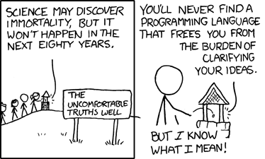

Introduction and overview
Principles of Programming Languages
Mark Armstrong
Fall 2020
1 Preamble
The preamble section of each notes will include
- an introduction to the material covered in the section,
- any notable references,
- i.e., specific chapters of our recommended/additional texts from which the notes are derived, or which expand on the notes,
- a table of contents, and
- if necessary, an update history, chronicling any major changes.
- Note the git commit history will provide a more fine-grained record of upates.
1.1 Introduction
This section of notes introduces the course and the staff, and lays out a few central concepts.
1.2 Notable references
- Peter Van Roy and Seif Haridi, “Concepts, Techniques, and Models of Computer Programming”, Preface
- Peter Van Roy, “Programming Paradigms for Dummies: What Every Programmer Should Know”
- Robert W. Sebesta, “Concepts of Programming Languages” (10th edition)
1.3 Table of comments
2 Welcome
Welcome to the course!
2.1 Instructor: Mark Armstrong

- Email: armstmp@mcmaster.ca
- Website: https://armkeh.github.io
(Digital) office/student conference hours available on request.
2.2 Teaching assistant: Habib Ghaffari-Hadigheh

- Email: ghaffh1@mcmaster.ca
- Website: https://ghhabib.me/
(Digital) office/student conference hours available on request.
3 Purpose and goals of this course
Here we provide both formal and informal descriptions and goals for this course.
3.1 Calendar description
Design space of programming languages; abstraction and modularization concepts and mechanisms; programming in non-procedural (functional and logic) paradigms; introduction to programming language semantics.
3.2 Informal objectives
- Investigate a number of programming languages
which exemplify different paradigms.
- A relatively shallow but comprehensive survey.
- Focusing on general-purpose languages.
- Formally describe programming language syntax and semantics.
- An application of theory learned previously.
- Apply various abstraction and modularisation techniques,
- Learning how to apply them and to which situations they are best applied.
3.3 Course preconditions
Before beginning this course:
- Students should know and understand:
- Basic concepts about integers, sets, functions, & relations.
- Induction and recursion.
- First order logic, axiomatic theories & simple proof techniques.
- Regular expressions & context-free grammars.
- Programming in imperative languages.
- Basic concepts of functional programming languages.
- Students should be able to:
- Produce proofs involving quantifiers and/or induction.
- Understand the meaning of a given axiomatic theory.
- Construct regular sets & context-free languages.
- Produce small to medium scale programs in imperative languages.
- Produce small scale programs in functional languages.
3.4 Course postconditions
After completion of this course:
- Students should know and understand:
- Programming in functional languages.
- Programming in logical languages.
- Formal definitions of syntax & semantics for various simple programming languages.
- Various abstraction & modularisation techniques employed in programming languages.
- Students should be able to:
- Reason about the design space of programming languages, in particular tradeoffs & design issues.
- Produce formal descriptions of syntax & semantics from informal descriptions, identifying ambiguities.
- Select appropriate abstraction & modularisation techniques for a given problem.
- Produce tools for domain-specific languages in imperative, functional and logical languages.
3.5 Formal rubric for the course
| Topic | Below | Marginal | Meets | Exceeds |
|
Familiarity with various programming languages |
Shows some competence in procedural languages, but not languages from other paradigms |
Shows competence in procedural languages and limited competence in languages from other paradigms |
Achieves competence with the basic usage of various languages |
Achieves competence with intermediate usage of various languages |
|
Ability to identify and make use of abstraction, modularisation constructs |
Cannot consistently identify such constructs |
Identifies such constructs, but does not consistently make use of them when programming |
Identifies such constructs and shows some ability to make use of them when programming |
Identifies sucj constructs and shows mastery of them when programming |
|
Ability to comprehend and produce formal descriptions of PL syntax |
Unable or rarely able to comprehend given grammars; does not identify ambiguity or precedence rules |
Comprehends given grammars, but produces grammars which are ambiguous or which do not correctly specify precedence |
Makes only minor errors regarding precedence or ambiguity when reading or producing grammars |
Consistently fully understands given grammars and produces correct grammars. |
|
Ability to comprehend and produce operational semantics for simple PLs |
Rarely or never comprehends such semantic descriptions |
Usually comprehends such semantic descriptions, but cannot consistently produce them |
Comprehends such semantic descriptions and produces them with only minor errors |
Comprehends such semantic descriptions and produces them without errors |
4 “Principles of programming languages”
We begin the course with these fundamental questions.
- What is a programming language?
- What are the components of a programming language?
- How do we classify a programming language?
4.1 What is a programming language?
- A formal, finitely described language used for
describing (in most cases, potentially infinite) processes.
- Formal meaning described by a mathematical tool.
- Formality is necessary for a machine to understand the language.
- Natural (human-spoken) languages are not formal.
- A process being some sequence of actions or steps.
- Formal meaning described by a mathematical tool.
4.1.1 “I know what I mean!”
Sometimes, the requirement of a formal language is a pain.

From the xkcd comic “Well 2”
4.1.2 Example of a process
Consider the mathematical function \(f(x) = x + 10\).
- On its own, this function is not a process;
- it is only a rule that \(f(x)\) is related to \(x + 10\).
However, you likely learned as a child a “program” describing the process for calculating \(f(x)\).
start with all your fingers down
say “x”
repeat until you run out of fingers:
say the result of adding one to the number you just said
put up one finger
the answer is the last number you said
In computing, we sometimes conflate programs and (mathematical) functions.
- Sometimes, we must remember they are not the same.
- Mathematical functions are rules. They do no computing.
- Programs describe a sequences of steps. They may tell us how to compute the results of mathematical functions.
4.2 What are the components of a programming language?
Just like a natural language, a programming language consists of
- syntactic rules
- which describe the legal forms of programs, and
- semantics rules
- which describe the meaning of legal programs,
- if they in fact have a meaning!
- which describe the meaning of legal programs,
4.2.1 Syntax and semantics example
For example, English syntax tells us a sentence structured
adjective adjective (plural noun) (plural verb) adverb
is grammatically correct.
In the same way, a Python compiler tells us a program of the form
expression + expression
is syntactically correct.
Note that in both cases, though, such sentences/programs may be meaningless! Noam Chomsky gave the example
Colourless green ideas sleep furiously.
And we could construct the Python program
1 + "hello"
which crashes when run.
4.2.2 Exercise: a meaningless C or Java program
Our example Python program above
1 + "hello"
is syntactically correct because Python is dynamically typed, meaning that type errors such as this are not caught until runtime.
As an exercise, can you construct a similar example of a program which is syntactically correct but semantically meaningless in the statically typed languages C and Java?
Hint: consider using a value which does not have just one type.
4.3 How do we classify a programming language?
First and foremost, we classify languages into paradigms,
- characterised by the set of abstractions the language makes available.
But also in many other ways, such as:
- Typing properties, including
- static or dynamic (runtime) typechecking,
- “weak” or “strong” typing discipline,
- polymorphism support, builtin types, methods of defining new types, etc.
- “High” or “low” level languages.
- (Primary) implementation strategy: compiled or interpreted?
- Ancestery or culture.
- “Scripting languages”
- “JVM languages”
- “The C-family”
5 Abstraction
In “Concepts, Techniques and Models of Computer Programming”, Peter Van Roy and Seif Haridi offer this definition of abstraction.
We define an abstraction loosely as a tool or device that solves a particular problem. Usually the same abstraction can be used to solve many different problems. This versatility is one of the key properties of abstractions.
In “Concepts of Programming Languages” (10th edition), Robert W. Sebesta defines it so.
Briefly, abstraction means the ability to define and then use complicated structures or operations in ways that allow many of the details to be ignored.
5.1 Dijkstra on abstraction
- A key feature of abstractions is that they let us set aside details and work at a higher level.
- It is a common misconception that abstractions simply ignore details,
and in doing so lose precision.
- This thinking makes abstraction seem harmful.
- Instead, abstraction involves selecting
- which details are relevant to the problem at hand, and
- which details are irrelevant to the problem at hand.
- When we set aside details that are irrelevant to a problem, we can create solutions which will work for other problems which share the same important details.
In his ACM Turing Lecture, “The Humble Programmer” in 1972, Dijkstra said
The purpose of abstraction is not to be vague, but to create a new semantic level in which one can be absolutely precise.
5.2 Example: sorting
Consider a programer who is assigned the following tasks.
- Design a program which sorts a list of dollar amounts in increasing order.
- Design a program which sorts a list of bank accounts in increasing order of the amount in the account.
- Design a program which sorts a list of bank customers in increasing order of the sum of the amounts across all of their accounts.
This programmer may write three programs which all look very similar, except for
- the type of the input and
- the method of access the values compared during sorting.
Or the programmer may realise that if abstract away these details, so the program is made
- to accept any type (is made polymorphic) and
- to take as an additional input the method of comparison,
the same code may be reused for all three tasks!
5.3 “Leaky” abstractions
When we use an abstraction, we intend to hide unimportant details. But in some cases, those details may still be exposed.
- We say they “leak through”, so we have a “leaky abstraction”.
A classic example is iterating over a two-dimensional array.
- Two-dimensional arrays allow us to reason about a square made of memory cells.
- In a two-dimensional array
A, it would seemA[1][1]is adjacent toA[0][1],A[2][1],A[1][2], andA[1][0].
- In a two-dimensional array
- But computer memory is one-dimensional.
- A cell of memory cannot be adjacent to four others; only two.
- Iterating through two-dimensional arrays in the wrong direction
can be very inefficient when the array is large.
- If
A[1][1]andA[2][1]are in fact not adjacent, and are in separate caches or on separate pages, we will trigger a cache miss or page fault by iterating through in the second dimension.
- If
5.4 A taxonomy of programming paradigms by abstraction support
From Peter Van Roy's 2012 paper, “Programming Paradigms for Dummies: What Every Programmer Should Know”.

5.5 Abstractions throughout this course
We will see numerous abstractions throughout this course.
- Functions, methods, procedures and subroutines abstract away from managing control flow.
- Variables abstract away from reasoning about the contents of registers and memory.
- Abstract data types abstract away from the form of data in memory.
- Reference types abstract away from reasoning about memory addresses.
We will also try to de-mystify some abstractions which are often considered difficult to understand.
- Algebras abstract away from sets together with operations on those sets.
- Closures abstract away from the concept of a function existing alongside some state.
- Monads abstract away from choosing a particular computation strategy.